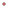
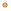

<!doctype html>
<html lang="en">
    <head>
        <meta charset="utf-8">
        <meta http-equiv="X-UA-Compatible" content="IE=edge">
        <meta name="viewport" content="initial-scale=1,user-scalable=no,maximum-scale=1,width=device-width">
        <meta name="mobile-web-app-capable" content="yes">
        <meta name="apple-mobile-web-app-capable" content="yes">
        <link rel="stylesheet" href="css/leaflet.css">
        <link rel="stylesheet" href="css/qgis2web.css"><link rel="stylesheet" href="css/fontawesome-all.min.css">
        <link rel="stylesheet" href="css/leaflet-control-geocoder.Geocoder.css">
        <style>
        html, body, #map {
            width: 100%;
            height: 100%;
            padding: 0;
            margin: 0;
        }
        </style>
        <title></title>
    </head>
    <body>
        <div id="map">
        </div>
        <script src="js/qgis2web_expressions.js"></script>
        <script src="js/leaflet.js"></script>
        <script src="js/leaflet.rotatedMarker.js"></script>
        <script src="js/leaflet.pattern.js"></script>
        <script src="js/leaflet-hash.js"></script>
        <script src="js/Autolinker.min.js"></script>
        <script src="js/rbush.min.js"></script>
        <script src="js/labelgun.min.js"></script>
        <script src="js/labels.js"></script>
        <script src="js/leaflet-control-geocoder.Geocoder.js"></script>
        <script src="data/Trips_0.js"></script>
        <script>
        var map = L.map('map', {
            zoomControl:true, maxZoom:28, minZoom:1
     }).fitBounds([[37.4238253802915, -122.0829009197085],[37.4211274197085,-122.0855988802915]]);
        var hash = new L.Hash(map);
        map.attributionControl.setPrefix('<a href="https://github.com/tomchadwin/qgis2web" target="_blank">qgis2web</a> &middot; <a href="https://leafletjs.com" title="A JS library for interactive maps">Leaflet</a> &middot; <a href="https://qgis.org">QGIS</a>');
        var autolinker = new Autolinker({truncate: {length: 30, location: 'smart'}});
        var bounds_group = new L.featureGroup([]);
        var basemap0 = L.tileLayer('https://{s}.basemaps.cartocdn.com/rastertiles/dark_nolabels/{z}/{x}/{y}.png', {
            attribution: '&copy; <a href="http://openstreetmap.org">OpenStreetMap</a> contributors,<a href="http://creativecommons.org/licenses/by-sa/2.0/">CC-BY-SA</a>',
            maxZoom: 28
        });
        basemap0.addTo(map);
        function setBounds() {
        }
        function pop_Trips_0(feature, layer) {
            var popupContent = '<table>\
                    <tr>\
                        <td colspan="2"><strong>Station</strong><br />' + (feature.properties['Station'] !== null ? autolinker.link(feature.properties['Station'].toLocaleString()) : '') + '</td>\
                    </tr>\
                    <tr>\
                        <td colspan="2"><strong>ID</strong><br />' + (feature.properties['ID'] !== null ? autolinker.link(feature.properties['ID'].toLocaleString()) : '') + '</td>\
                    </tr>\
                    <tr>\
                        <td colspan="2"><strong>Trip Ends Post-Shutdown</strong><br />' + (feature.properties['Trip Ends Post-Shutdown'] !== null ? autolinker.link(feature.properties['Trip Ends Post-Shutdown'].toLocaleString()) : '') + '</td>\
                    </tr>\
                    <tr>\
                        <td colspan="2"><strong>Trips Ends Pre-Shutdown</strong><br />' + (feature.properties['Trips Ends Pre-Shutdown'] !== null ? autolinker.link(feature.properties['Trips Ends Pre-Shutdown'].toLocaleString()) : '') + '</td>\
                    </tr>\
                    <tr>\
                        <td colspan="2"><strong>Percent Change</strong><br />' + (feature.properties['Percent Change'] !== null ? autolinker.link(feature.properties['Percent Change'].toLocaleString()) : '') + '</td>\
                    </tr>\
                </table>';
            layer.bindPopup(popupContent, {maxHeight: 400});
        }

        function style_Trips_0_0(feature) {
            if (feature.properties['Percent Change'] >= -97.693878 && feature.properties['Percent Change'] <= -55.539568 ) {
                return {
                pane: 'pane_Trips_0',
                radius: 2.0,
                opacity: 1,
                color: 'rgba(0,0,0,1.0)',
                dashArray: '',
                lineCap: 'butt',
                lineJoin: 'miter',
                weight:.5,
                fill: true,
                fillOpacity: 1,
                fillColor: 'rgba(227,26,28,1.0)',
                interactive: true,
            }
            }
            if (feature.properties['Percent Change'] >= -55.539568 && feature.properties['Percent Change'] <= -38.879736 ) {
                return {
                pane: 'pane_Trips_0',
                radius: 3.16666,
                opacity: 1,
                color: 'rgba(0,0,0,1.0)',
                dashArray: '',
                lineCap: 'butt',
                lineJoin: 'miter',
                weight:.5,
                fill: true,
                fillOpacity: 1,
                fillColor: 'rgba(255,127,0,1.0)',
                interactive: true,
            }
            }
            if (feature.properties['Percent Change'] >= -38.879736 && feature.properties['Percent Change'] <= -21.362229 ) {
                return {
                pane: 'pane_Trips_0',
                radius: 4.33334,
                opacity: 1,
                color: 'rgba(0,0,0,1.0)',
                dashArray: '',
                lineCap: 'butt',
                lineJoin: 'miter',
                weight:.5,
                fill: true,
                fillOpacity: 1,
                fillColor: 'rgba(253,191,111,1.0)',
                interactive: true,
            }
            }
            if (feature.properties['Percent Change'] >= -21.362229 && feature.properties['Percent Change'] <= 1.282051 ) {
                return {
                pane: 'pane_Trips_0',
                radius: 5.5,
                opacity: 1,
                color: 'rgba(0,0,0,1.0)',
                dashArray: '',
                lineCap: 'butt',
                lineJoin: 'miter',
                weight:.5,
                fill: true,
                fillOpacity: 1,
                fillColor: 'rgba(246,240,154,1.0)',
                interactive: true,
            }
            }
            if (feature.properties['Percent Change'] >= 1.282051 && feature.properties['Percent Change'] <= 34.615385 ) {
                return {
                pane: 'pane_Trips_0',
                radius: 6.66666,
                opacity: 1,
                color: 'rgba(0,0,0,1.0)',
                dashArray: '',
                lineCap: 'butt',
                lineJoin: 'miter',
                weight:.5,
                fill: true,
                fillOpacity: 1,
                fillColor: 'rgba(225,217,52,1.0)',
                interactive: true,
            }
            }
            if (feature.properties['Percent Change'] >= 34.615385 && feature.properties['Percent Change'] <= 144.444444 ) {
                return {
                pane: 'pane_Trips_0',
                radius: 7.83334,
                opacity: 1,
                color: 'rgba(0,0,0,1.0)',
                dashArray: '',
                lineCap: 'butt',
                lineJoin: 'miter',
                weight:.5,
                fill: true,
                fillOpacity: 1,
                fillColor: 'rgba(167,214,164,1.0)',
                interactive: true,
            }
            }
            if (feature.properties['Percent Change'] >= 144.444444 && feature.properties['Percent Change'] <= 511.111111 ) {
                return {
                pane: 'pane_Trips_0',
                radius: 9.0,
                opacity: 1,
                color: 'rgba(0,0,0,1.0)',
                dashArray: '',
                lineCap: 'butt',
                lineJoin: 'miter',
                weight:.5,
                fill: true,
                fillOpacity: 1,
                fillColor: 'rgba(51,160,44,1.0)',
                interactive: true,
            }
            }
        }
        map.createPane('pane_Trips_0');
        map.getPane('pane_Trips_0').style.zIndex = 400;
        map.getPane('pane_Trips_0').style['mix-blend-mode'] = 'normal';
        var layer_Trips_0 = new L.geoJson(json_Trips_0, {
            attribution: '',
            interactive: true,
            dataVar: 'json_Trips_0',
            layerName: 'layer_Trips_0',
            pane: 'pane_Trips_0',
            onEachFeature: pop_Trips_0,
            pointToLayer: function (feature, latlng) {
                var context = {
                    feature: feature,
                    variables: {}
                };
                return L.circleMarker(latlng, style_Trips_0_0(feature));
            },
        });
        bounds_group.addLayer(layer_Trips_0);
        map.addLayer(layer_Trips_0);
        var osmGeocoder = new L.Control.Geocoder({
            collapsed: true,
            position: 'topleft',
            text: 'Search',
            title: 'Testing'
        }).addTo(map);
        document.getElementsByClassName('leaflet-control-geocoder-icon')[0]
        .className += ' fa fa-search';
        document.getElementsByClassName('leaflet-control-geocoder-icon')[0]
        .title += 'Search for a place';
        var baseMaps = {};
        L.control.layers(baseMaps,{'Percent Change<br /><table><tr><td style="text-align: center;"></td><td>-97 - -56 </td></tr><tr><td style="text-align: center;"></td><td>-56 - -39 </td></tr><tr><td style="text-align: center;"></td><td>-39 - -21 </td></tr><tr><td style="text-align: center;"></td><td>-21 - 1 </td></tr><tr><td style="text-align: center;"></td><td>1 - 35 </td></tr><tr><td style="text-align: center;"></td><td>35 - 144 </td></tr><tr><td style="text-align: center;"></td><td>144 - 511 </td></tr></table>': layer_Trips_0,},{collapsed:false}).addTo(map);
        setBounds();
        </script>
    </body>
</html>
